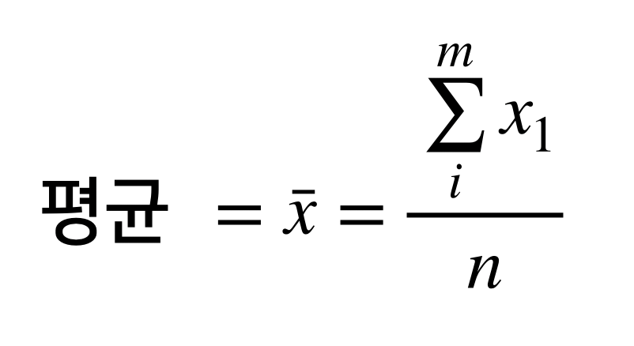
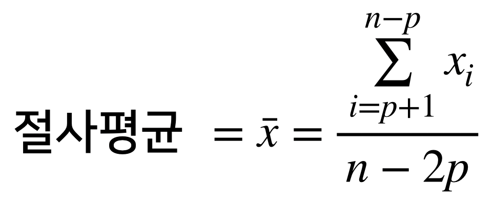
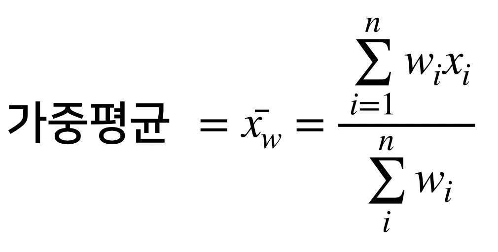

Chapter 12 R로 하는 기초 통계량
12.1 데이터의 위치 추정
데이터를 살펴 보는 가장 기초적인 단계는 변수(피쳐) 의 대표값(Typical Value) 를 구하는 것입니다. 이것은 데이터의 중심경향성(값이 어디쯤 있는지?)를 나타내는 추정 값입니다.
| 용어 | 의미 |
|---|---|
| 평균(mean) | 모든 값의 총합을 개수로 나눈것 |
| 가중평균(weighted mean) | 가중치를 곱한 값의 총합을 가중치의 총합으로 나눈것 |
| 중간값(median) | 가장 가운데 위치한 값 |
| 가중중간값(weighted median) | 정렬한 후, 각 가중치 값을 위에서 부터 더할때, 총합의 중간에 위치한값 |
| 절사평균(trimmed mean) | 정해진 개수의 극단값을 제외한 나머지 값들의 평균 |
| Robust | 극단값들에 민감하지 않음 |
| 특이값(outlier) | 대부분의 값과 매우 다른 데이터값 |
12.1.1 평균
- 평균은 가장 기본적인 위치 추정 방법.
- 모집단 표본의 평균을 “엑스바” 라고 읽습니다.
- 평균에서 주의 할 점은, 평균이 가장 기본적인 위치 추정법 이지만, 극단값에 민감합니다.

library(tidyverse)
state <- read_csv("state.csv")- 미국 각 주의 인구와 살인 비율(10만명당 연간 살인 사건) 을 보여 주는 데이터 입니다.
- 평균을 구해 보면 아래와 같습니다.
mean(state[["Population"]])## [1] 616287612.1.2 절사평균
- 값들을 크기순으로 정렬한뒤, 양끝에서 일정 개수의 값들을 삭제한 뒤 남은 값들을 가지고 구한 평균.
- P개의 가장 크고, 작은 값들을 제외한뒤 계산함.

mean(state[["Population"]], trim=0.1)## [1] 478369712.1.3 가중평균
- 가중평균을 사용하는 이유
- 더큰 변화량을 가지는 값들에 대해 작은 가중치 를 주고 싶을때(예:고장난 센서)
- 서로다른 대조군에 대한 데이터가 서로다른 비율을 가질때(예:인구)
- 미국 전체의 평균 살인율을 구할려면, 주마다 다른 인구를 고려해야 하기때문에, 가중평균을 사용해야 합니다.

#install.packages("matrixStats")
library(matrixStats)
# 가중평균
weighted.mean(state[["Murder.Rate"]],w=state[["Population"]])## [1] 4.445834# 가중 중간값
weightedMedian(state[["Murder.Rate"]], w=state[["Population"]])## [1] 4.412.2 데이터의 변위 추정
앞서 배운 위치 데이터는 데이터의 특징을 요약하는 요소 라면, 변이는 데이터 값이 얼마나 밀집해 있는지 혹은 퍼져 있는지를 알 수 있는 지표 입니다.
| 용어 | 의미 |
|---|---|
| 편차(deviation) | 관측값과 위치 추정값사이의 차이 |
| 분산(variance) | 평균과의 편차를 제곱한 값들의 합을 n-1로 나눈값 n은 데이터 개수 |
| 표준편차(standard deviation) | 분산의 제곱근 (L2노름 또는 유클리드 노름) |
| 평균절대편차(mean absolute deviation) | 평균과의 편차의 절댓값의 평균(L1 노름, 맨하탄 노름) |
| 중간값의 중위절대편차 | 중간값과의 편차의 절대값의 중간값 |
| 백분위수(Percentile) | 어떤 값들의 P퍼센트가 이 값 혹은 더 작은 값을 갖고, (100-p)퍼센트가 이값 혹은 더 큰값을 갖도록 하는 값(분위수) |
| 사분위 범위(interquantile range) | 75번째 백분위수와 25번째 백분위수 사이의 차이 |
12.2.1 편차
- {1,4,4} 이라는 데이터가 있으면, 평균은 3이고 중간값은 4임.
- 평균에서의 편차는 1-3=2, 4-3=1, 4-3=1 임. 편차는 데이터가 중앙값을 주변으로 얼마나 퍼져 있는지 말해줍니다.
- 편차의 평균을 구하는 것은 멍청한 짓임 => 평균을 기분으로 편차의 합은 항상 0이기 때문에.
- 편차의 절대 값의 평균을 구하는 것은 괜찮음.
- {2,1,1} 에 대해 평균은(2+1+1)/3 = 1.33 => 평균 절대 편차
12.3
#표준편차
sd(state[["Population"]])## [1] 6848235#사분위 범위(IRQ- Inter Quintile Range)
IQR(state[["Population"]])## [1] 4847308#중위 절대 편차(MAD : median absolute deviation)
mad(state[["Population"]])## [1] 3849870